AloneMonkey
Welcome to the MonkeyDev wiki! Welcome to the MonkeyDev wiki!
This is a Tool for Jailbreak and Nonjailbreak developer. This is a Tool for Jailbreak and Nonjailbreak developer.
If you have a jailbreak device, you can use it to write a CaptainHook Tweak 、 Logos Tweak or Command-line Tool 。 If you have a jailbreak device, you can use it to write a CaptainHook Tweak , Logos Tweak or Command-line Tool .
If you don't have a jailbreak device, you can create a MonkeyApp project to debug and hook thirdparty application. If you don't have a jailbreak device, you can create a party application.MonkeyApp project to debug and hook third
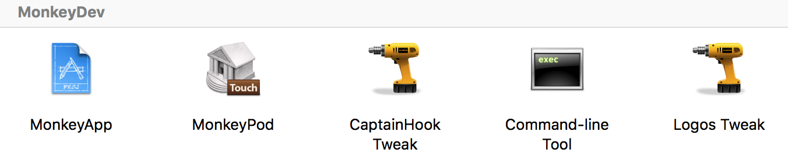
This is a tool for jailbreakers and non-jailbroken developers. It mainly consists of four modules:
Logos Tweak Logos Tweak
Use the logify.pl tool provided by theos to convert *.xm files to *.mm files for compilation. Integrated with CydiaSubstrate , you can use MSHookMessageEx and MSHookFunction to Hook OC functions and specify addresses.
CaptainHook Tweak CaptainHook Tweak
Use the header file provided by CaptainHook to perform the Hook and property acquisition of OC functions.
Command-line Tool Command-line Tool
Can directly create command line tools that run on jailbroken devices
MonkeyApp MonkeyApp
This is a module that automates the integration of thirdparty applications with Reveal, Cycript, and dylib. It supports debug dylib and thirdparty applications. It supports Pod's integration with third-party applications. It only needs to prepare an ipa or app file after the shell.
Installation · AloneMonkey/MonkeyDev Wiki · GitHub
Environmental requirements
Make sure of the following points before using the tool:
- Install the latest theos
sudo git clone --recursive https://github.com/theos/theos.git /opt/theos
- Install ldid (if installing the os process installs ldid, skip)
brew install ldid
- the password-free login jailbreak device (skip if there is no jailbreak device)
ssh-keygen -t rsa -P '' ssh-copy-id -i /Users/username/.ssh/id_rsa root@ip
Or install sshpass to set the password:
brew install https://raw.githubusercontent.com/kadwanev/bigboybrew/master/Library/Formula/sshpass.rb
Installation
You can use the following command to select the specified Xcode to install:
sudo xcode-select -s /Applications/Xcode-beta.app
The default installation of Xcode is:
xcode-select -p
Execute the installation command:
sudo /bin/sh -c "$(curl -fsSL https://raw.githubusercontent.com/AloneMonkey/MonkeyDev/master/bin/md-install)"
Uninstall
sudo /bin/sh -c "$(curl -fsSL https://raw.githubusercontent.com/AloneMonkey/MonkeyDev/master/bin/md-uninstall)"
Updated
If no special instructions are issued, use the following command to update:
sudo /bin/sh -c "$(curl -fsSL https://raw.githubusercontent.com/AloneMonkey/MonkeyDev/master/bin/md-update)"
After installation/update, restart Xcode and create a new project.
Using
Create a project
After the installation is complete, open Xcode , click File - New - Project... , select iOS slide to the bottom to see the module provided by MonkeyDev :
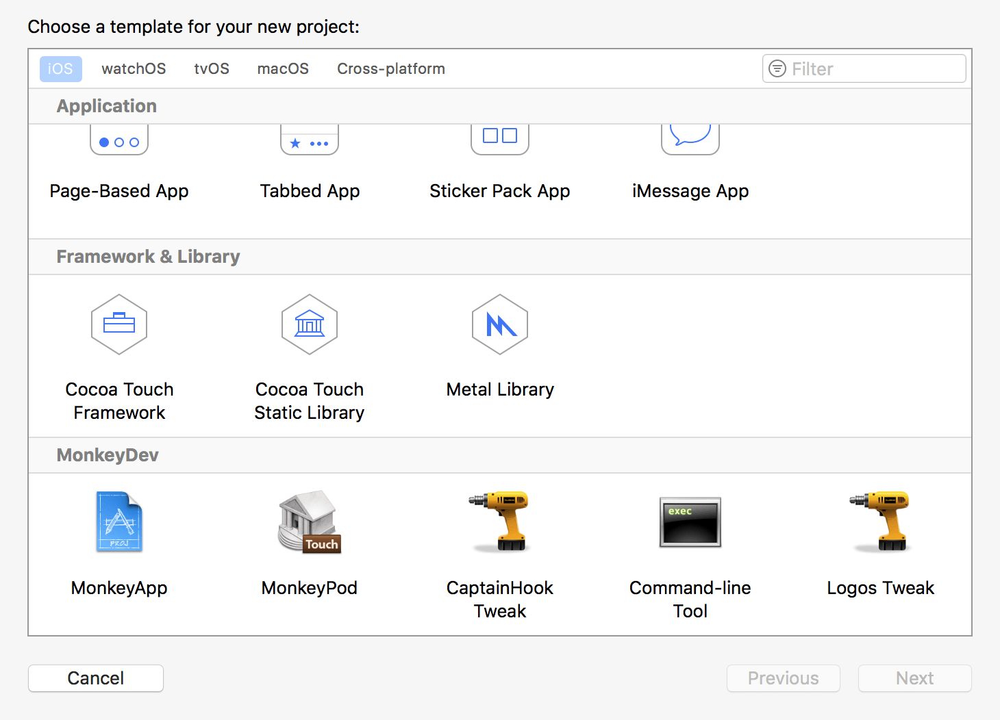
Select the corresponding project type, you can create the corresponding project.
Logos Tweak Logos Tweak
The structure of the Logos project is as follows:
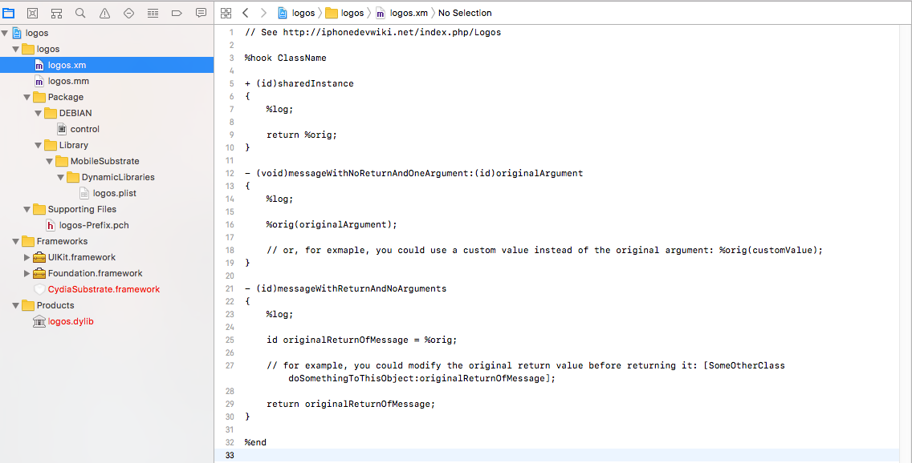
The code is written in the logos.xm file. The specific syntax looks at Logos . After writing it, the script will automatically convert it to the contents of the logos.mm file and compile it.
Several of the documents are explained as follows:
control : This file is used to configure the deb package to generate some information, such as version number, description, author and so on. logos.plist : This file is used to specify the target process to be injected. It is usually logos.plist to fill in the Bundle ID target process.
Projects automatically link CydiaSubstrate.framework without having to manually link.
Some of the project-related configurations are at the bottom of Build Settings as follows:
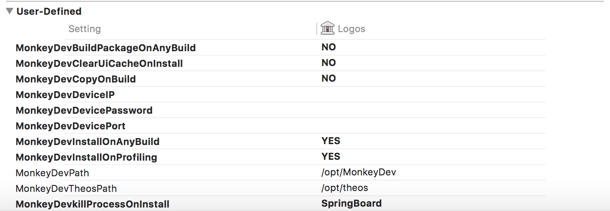
Specific meaning see: configuration instructions
Debug mode installation
Press the shortcut Commonand + B will be automatically installed to the phone.
Release mode installation
Press the shortcut Command + Shift + i . But this way the installation will not see the Log oh ~~~
See Log output
安装 libimobiledevice 工具: Install the libimobiledevice tool:
brew install libimobiledevice
Use the following command to view the output log:
idevicesyslog | grep 'xxx'
Or use the own console.app program to view.
CaptainHook Tweak and Command-line Tool
The creation and configuration are similar to Logos Tweak.
Configuration instructions

The default remote device IP is localhost and the port is 22 .
You can set the export environment variable in the ~/.zshrc or ~/.bash_profile configuration file:
export MonkeyDevDeviceIP= export MonkeyDevDevicePort=
Non-Jailbroken App Integration
The election machine compiles and runs!
Introduction
MonkeyDev is is a Tool for Jailbreak and Nonjailbreak developer. This is a Tool for Jailbreak and Nonjailbreak developer.
If you have a jailbreak device, you can use it to write a CaptainHook Tweak 、 Logos Tweak or Command-line Tool 。 If you have a jailbreak device, you can use it to write a CaptainHook Tweak , Logos Tweak or Command-line Tool .
If you don't have a jailbreak device, you can create a MonkeyApp project to debug and hook thirdparty application. If you don't have a jailbreak device, you can create a party application. MonkeyApp project to debug and hook third

Let's start!!! Let's start!!!
Prepare a shell ipa or app (not available in jailbreak devices)
The first step is to prepare the shell ipa or app, you can download the jailbreak application from a helper (downloaded QAQ does not have shell).
Install Frida
sudo pip install frida
If there are errors do
sudo pip install frida --ignore-installed six
Install Tools
brew install libimobiledevice
brew install usbmuxd
In the terminal, use the cd command to enter the folder where the fridaiosdump script is located. You can use the ./dump app名称 command to perform shelling. After the script runs, it will generate a shelled ipa file in the folder, which is very convenient.
After the installation is complete, map the port through the iproxy command in the terminal:
iproxy 2222 22
, as shown in the following figure:
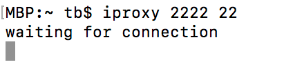
Then connect in another terminal window by
ssh -p 2222 root@localhost
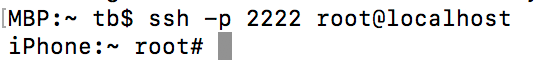
Use Frida
In the terminal, use the cd command to enter the folder where the fridaiosdump script is located.
You can use the ./dump app-name command to perform shelling. After the script runs, it will generate a shelled ipa file in the folder, which is very convenient.
The whole process is not difficult. If there is already a reverse foundation, you should be able to finish the environment very quickly, or you can use the tool directly. And because I didn't have the relevant knowledge, I spent more time to Google, but in the end, the successful shell still has a sense of accomplishment. At the same time, it is also necessary to continue learning, to understand the principles, and not to stay on the use of tools.
Create a MonkeyApp project
Click File - New - Project... create an iOS project and select MonkeyApp .
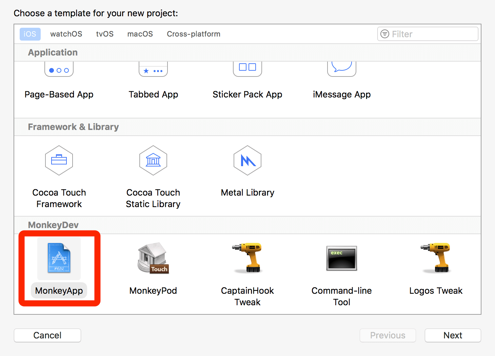
Then fill in the Product Name.
For non-jailbroken devices, you don't need to control the Target App.
If it is a jailbroken device, you can fill in Target App's name or bundle id in the Target App.
Fridaiosdump is Clutch-like tool, through which we can decrypt ipa from jailbreak's mobile phone. However, the ipa can only be run on the CPU of the same architecture. For example, the ipa decrypted on the 32bit iphone5c can only be installed on 32bit 5c or 5bit.
The tool will automatically use frida-ios-dumpto extract ipa files.
Note: First configure the environment by pressing the README of fridaiosdump repo!
First press frida-ios-dump repo README configured environment!), as follows:
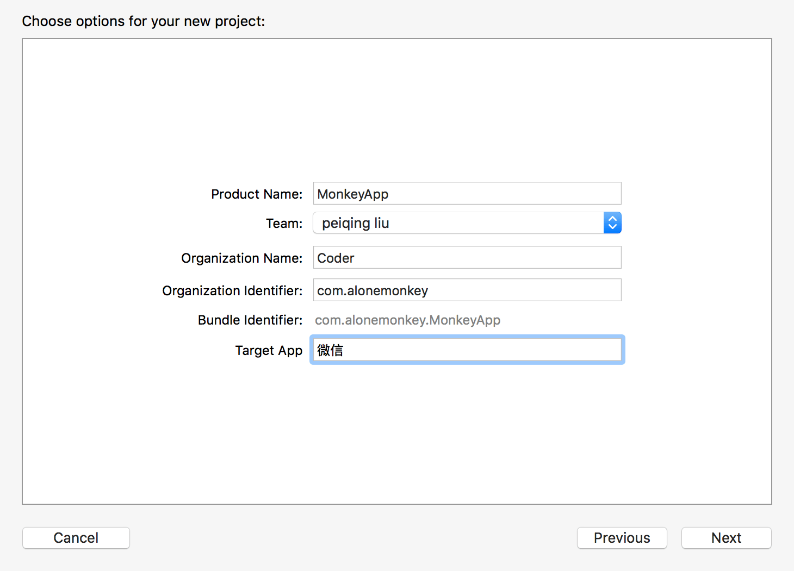
In addition, you can specify ip, port, and password in /opt/MonkeyDev/bin/dump.py.
After the creation is complete, you will get a project like this:
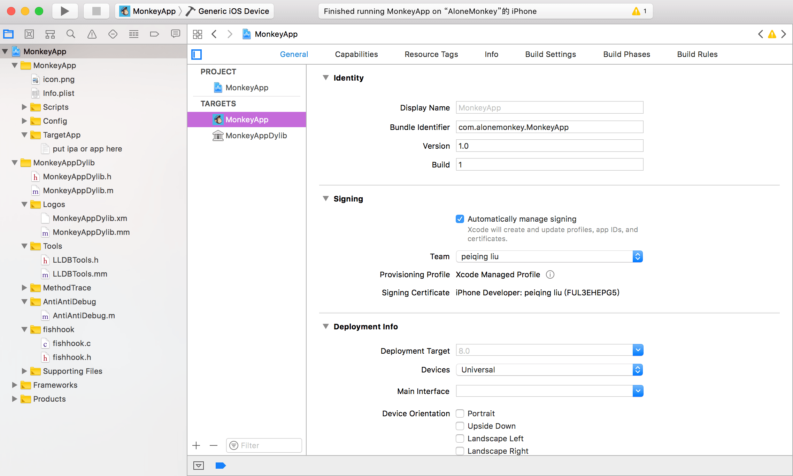
The project name I created here is MonkeyApp ，so the following corresponds to MonkeyApp. Your own creation depends on the name of your project!
MonkeyAppDylib This is the dynamic library that will be injected into the target App. The code you want to hook can be written in the MonkeyAppDylib.m file. I write some Demo code inside, support the HOOK of the OC runtime, and the fishhook of the C function.
Also supports the writing of theos logtweak! Write directly to the MonkeyAppDylib.xm file.
LLDBTools This is code for LLDB debugging, such as po pviews() 。
AntiAntiDebug which is anti-debugging code inside.
fishhook This is an automatically integrated fishhook module.
Below Framewroks has been automatically integrated Reveal.framework and Cycript.framework if you choose Release compiler will not be integrated.
Drag into compilation
I prepared a shelled ipa file, then I right click on the TargetApp folder inside the project Show in Finder, drag the ipa file into the following location (of course the app folder is also possible):
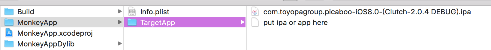
The latest support is directly dragged into the Xcode project TargetApp.
Xcode 8 needs to specify additional dependencies. Select Build Phases . Click Target Dependencies increase the number of dynamic libraries that need to be injected. as follows:
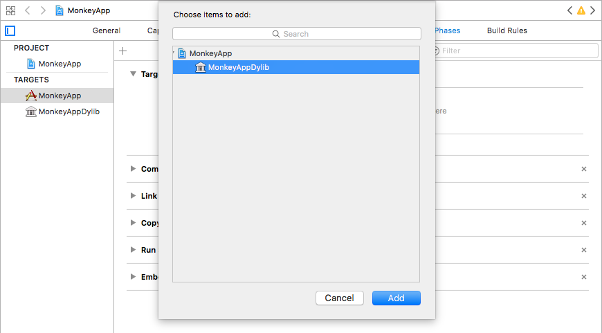
Then compile and run, open the computer Reveal , you can see the interface:
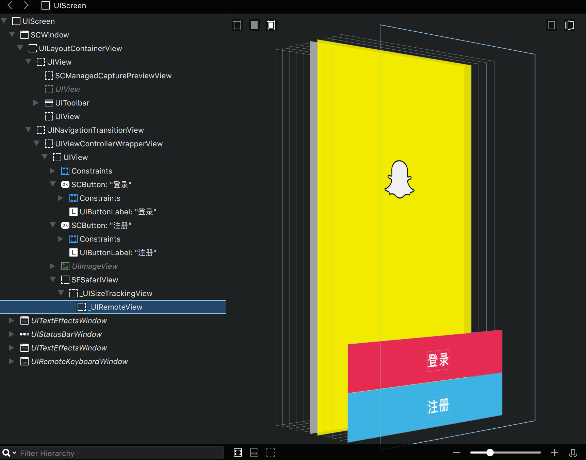
Download the SDK from Cycript and then enter the SDK directory to run the following command， Cycript view interface is no problem:
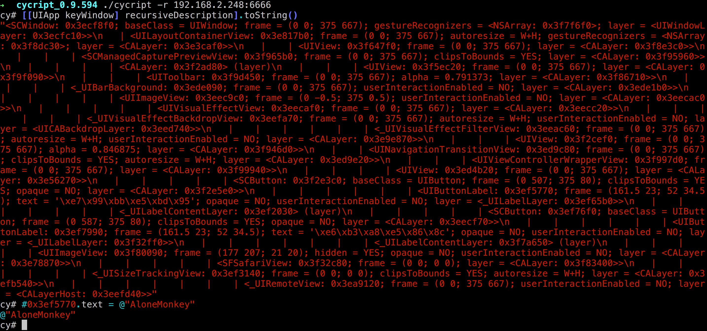
Here Cycript's default port is 6666.
Dynamic library debugging
After writing your own code in the MonkeyAppDylib.m file, you can directly debug the breakpoint. The effect is as follows:
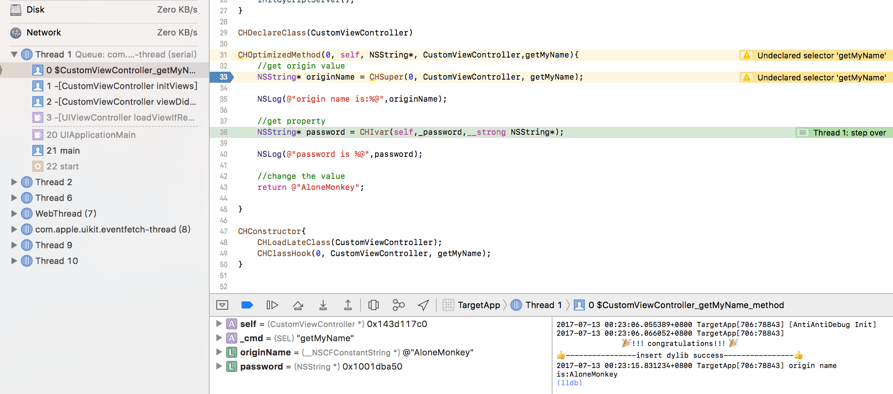
MonkeyAppDylib.xm file also supports dynamic debugging, click the breakpoint on the left side of the file, the first time because the suffix Xcode does not recognize, the next breakpoint will not be displayed, but the breakpoint is effective! Change the file type to Object C++ on the right side to reopen the file or restart Xcode. The effect is as follows:
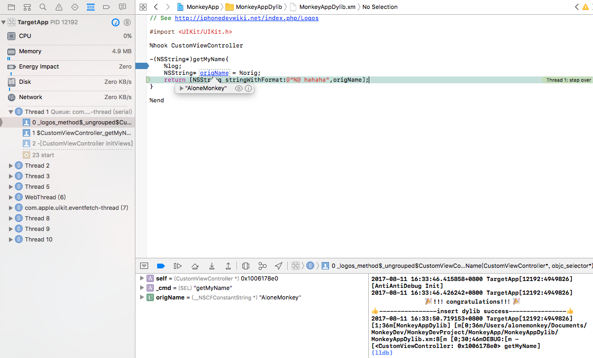
Demo App
MonkeyApp doesn't drag apps or ipa, there will be a default App for readers to test, looks like this is how ····
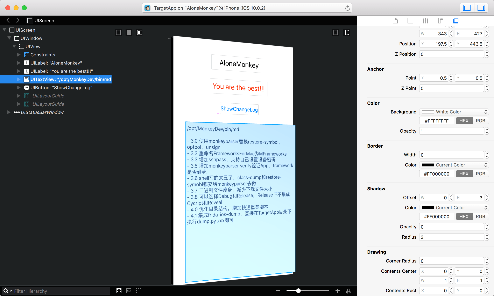
You can modify the code inside MonkeyAppDylib.m This is an example written by the author for Demo . Also note that MonkeyApp is ARC. Therefore, there are many problems with the writing of MRC on the Internet. Refer to the author's example:: https://github.com/AloneMonkey/WeChatPod
CHDeclareClass(CustomViewController)
#pragma clang diagnostic push
#pragma clang diagnostic ignored "-Wstrict-prototypes"
//add new method
CHDeclareMethod1(void, CustomViewController, newMethod, NSString*, output){
NSLog(@"This is a new method : %@", output);
}
#pragma clang diagnostic pop
CHOptimizedMethod0(self, NSString*, CustomViewController,getMyName){
//get origin value
NSString* originName = CHSuper(0, CustomViewController, getMyName);
NSLog(@"origin name is:%@",originName);
//get property
NSString* password = CHIvar(self,_password,__strong NSString*);
NSLog(@"password is %@",password);
[self newMethod:@"output"];
//set new property
self.newProperty = @"newProperty";
NSLog(@"newProperty : %@", self.newProperty);
//change the value
return @"AloneMonkey";
}
//add new property
CHPropertyRetainNonatomic(CustomViewController, NSString*, newProperty, setNewProperty);
CHConstructor{
CHLoadLateClass(CustomViewController);
CHClassHook0(CustomViewController, getMyName);
CHHook0(CustomViewController, newProperty);
CHHook1(CustomViewController, setNewProperty);
}
Class-dump
The project has integrated the function of class-dump to export the OC header file of the executable file. This function can be enabled at the bottom of the build settings.
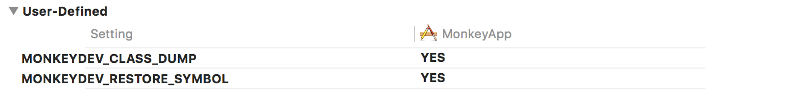
After opening, build will automatically perform class-dump operation, and then will generate a header file folder in the project directory:
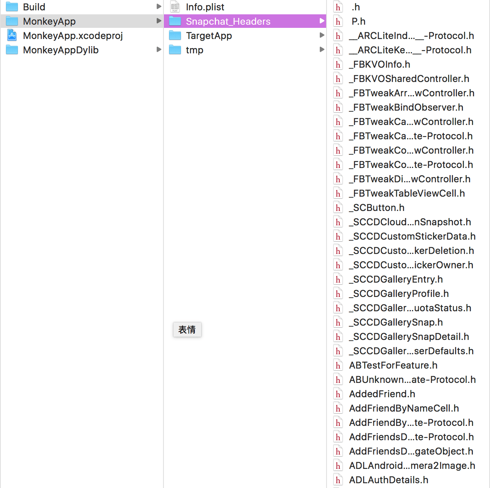
Restore-symbol
After the general application is released, the debug stack has no symbol information. Due to the characteristics of the OC language, the class name and the method name need to be saved. Therefore, the symbol table can be used to restore the symbol table according to the address of the specific method. Specific can read the article iOS symbol table recovery & reverse payment treasure
iOS symbol table recovery & reverse payment treasure
This is the same as class-dump.
Method trace log
Add log printing for method tracking, instead of the annoying logify.pl, just configure it and find MethodTraceConfig.plist in the new project. The configuration items are as follows:
- ENABLE_METHODTRACE: Set to YES to turn on method tracing. The default is NO.
- TARGETCLASSLIST: set the class or specified method to track, if you are tracking the entire class only use the write class name, the specific method inside the class needs to add an Array array method name, refer to the default wording.
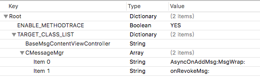
The main code comes from qhd's ANYMethodLog 。
The default integrated library
This tool integrates Reveal.framework and Cycript.framework,em…..
The integrated Reveal.frameworkis the latest version, so you may need the latest Reveal ，otherwise use your Reveal.framework instead of /opt/MonkeyDev/frameworks Reveal.framework 。
Cycript.framework in the /opt/MonkeyDev/Librarys directory.
You can delete the default integrated library in the following location::
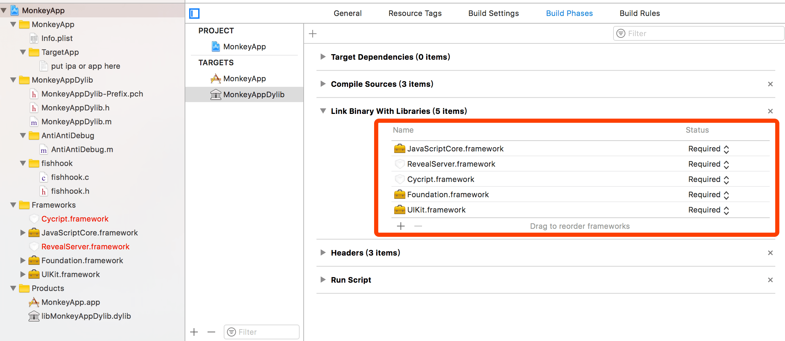
Add your own library
First copy the dylib or framework that needs to be injected into the frameworks directory as follows:
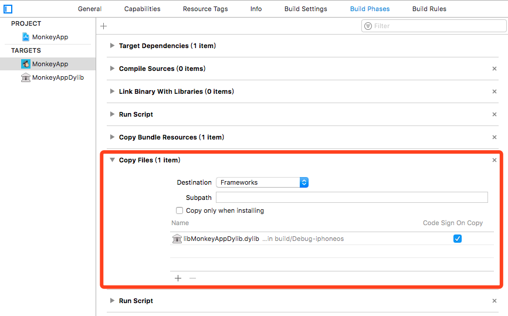
Then add in the location of the figure below, emmm. . . . That's it.

Static library, directly added to the above, specify the search path on it, and no difference between normal development. .
Note the installpath of the dynamic library itself, which can be modified by `installnametool -id to be @executablepathFrameworksxxxxx`
Integrated Frida
Since Frida's dynamic library is too large, it is not integrated into MonkeyDev by default, but integrating it is also very simple in two steps:
- Download the dynamic library from FridaGadget.dylib to the last Copy Files in the App:
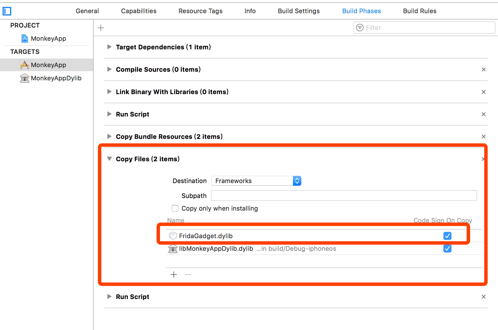
- Link FridaGadget.dylib to the dependency of MonkeyDev into the dynamic library:
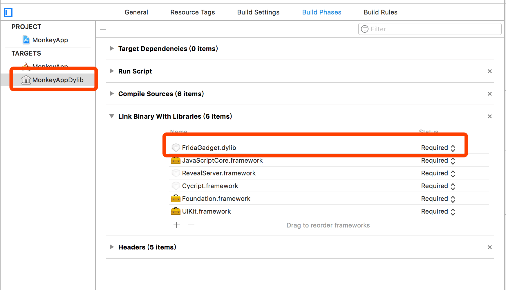
The startup logs are:Frida: Listening on 127.0.0.1 TCP port 27042 is the integration success..
Increase resources
Copy the Bundle resources and storyboard you need to embed into this directory.
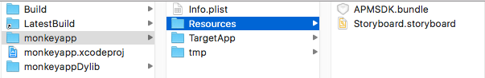
Upadte: Update to add resources, directly to the MonkeyApp inside to add resources, such as the new test.plist file select MonkeyApp Target, ensure that the resources to increase in the following list:
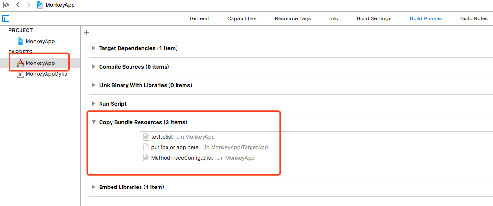
Change name and bundleid
If you need to change the redisplayed application display name and bundle id can be set in Xcode, want to use the original bundle id for re-signing, bundle id fill aaa.
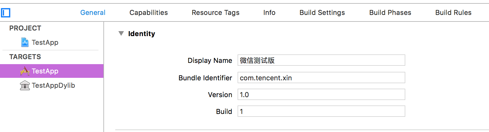
##generate IPA
After running, double-click createIPA.command in the source code's LatestBuild directory to generate the IPA file.
CocoaPods CocoaPods
MonkeyApp itself supports CocoaPods integrated third-party libraries, but there may be some settings to modify.
In the MonkeyApp project, it is assumed that the project name is MonkeyPod and the new file Podfile written in the directory:
use_frameworks! target 'MonkeyPodDylib' do pod 'FLEX' end
Target here is set to a dynamic library instead of an app, and then execute Pod install .
You can also use the author private CocoaPods:
source 'https://github.com/AloneMonkey/MonkeyDevSpecs.git' use_frameworks! target 'MonkeyPodDylib' do pod 'FLEX' pod 'MonkeyDevPod', '2.0.0' end
Compilation parameter modification
- If you drag the application shell structure and installation settings are inconsistent, for example, only the armv7 architecture, but to install to 64
bit machines, you need to get all the source library of pod in thexxxxDylib` .Build SettingsunderBuild Active Architecture OnlyDebug changed to No, including the Target of `Pods
- The jailbreak application downloaded directly from the XX assistant does not need to be modified (1) and run directly!
running result
Non-Jailbroken Plug-In Pod
Since Pod is supported, of course, it also supports the transfer of its own plugin to the Pod, and then through the pod installation, it is simply a nonjailbroken platform plug-in store! ！ ! ！ !
Here I have a private Pod, edit Podfile:
source 'https://github.com/AloneMonkey/MonkeyDevSpecs.git' use_frameworks! target 'MonkeyPodDylib' do pod 'MonkeyDevPod' end
Then install and change the Build Active Architecture Only Debug under the Build Settings of Pods-MonkeyPodDylib to No.
otes for the MonkeyPodDylib.m file:
CHConstructor{ CHLoadLateClass(CustomViewController); CHClassHook(0, CustomViewController, getMyName); }
Because the MonkeyDevPod library also modifies the screen to display the returned string as MonkeyDevPod , the effect is visible when running.
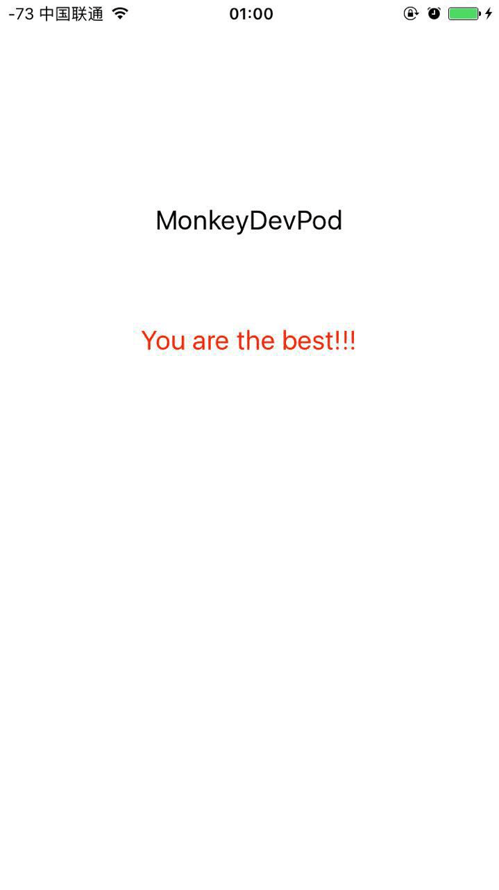
Welcome to submit your own non-jailbreak plugin to my private CocoaPods warehouse.
https:/github.comAloneMonkey/MonkeyDevSpecs
Non-Jailbroken Plugin Pod
This section describes how to pass your own non-jailbreaking plugins to CocoaPods, then install them via Pod!
- Note: When you develop your own Pod, file names are prefixed to prevent multiple pods from having the same header file!
Create project
MonkeyDev itself provides a project to create a pod. Click "File -> New -> Project" and select MonkeyPod at the bottom of iOS to create a new project as follows:
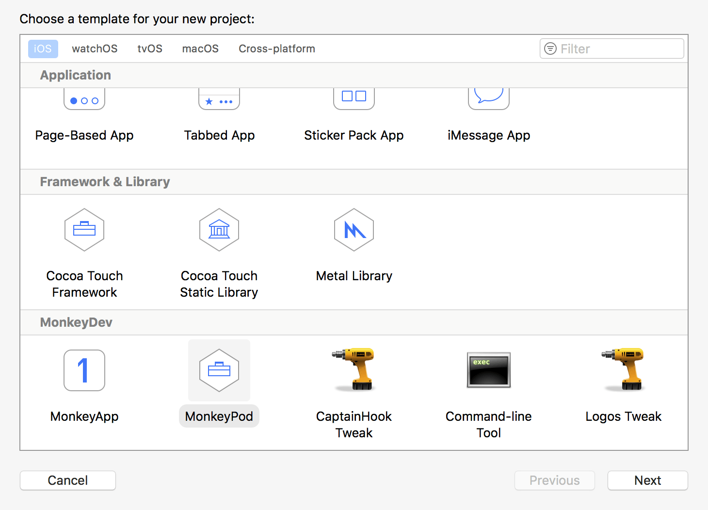
The project directory structure created is as follows:
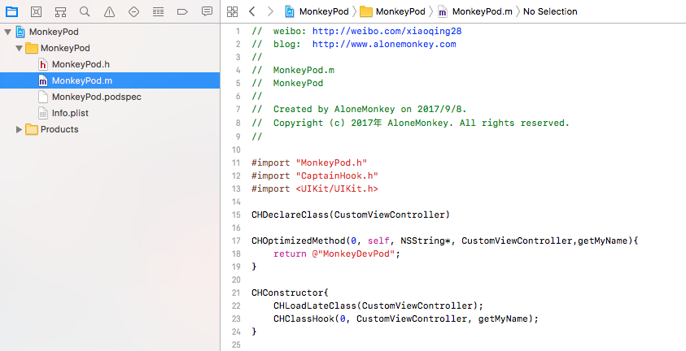
You can copy directly through the CaptainHook write code, there is a "xxxx.podspec" file is used to upload CocoaPods, right-click on the Finder, and then use the terminal to locate the "xxxx.podspec" file directory, Drag it to the project's root directory and remove it from the project and enter pod lib lint for local verification.
➜ MonkeyPod pod lib lint --allow-warnings -> MonkeyPod (1.0.0) - WARN | xcodebuild: /Users/alonemonkey/Desktop/MonkeyPod/MonkeyPod/MonkeyPod.m:17:1: warning: undeclared selector 'getMyName' [-Wundeclared-selector] - NOTE | xcodebuild: <scratch space>:3:1: note: expanded from here - NOTE | xcodebuild: <scratch space>:5:1: note: expanded from here MonkeyPod passed validation. [!] Unable to read the license file `/private/var/folders/7q/dxk4jpyn59x40lt6p998dkg40000gn/T/CocoaPods-Lint-20170908-29497-1ys2vxr-MonkeyPod/Pods/CaptainHook/LICENSE` for the spec `CaptainHook (2.0.0)` [!] Unable to read the license file `/Users/alonemonkey/Desktop/MonkeyPod/MonkeyPod/LICENSE` for the spec `MonkeyPod (1.0.0)` [!] Unable to read the license file `/private/var/folders/7q/dxk4jpyn59x40lt6p998dkg40000gn/T/CocoaPods-Lint-20170908-29497-1ys2vxr-MonkeyPod/Pods/CaptainHook/LICENSE` for the spec `CaptainHook (2.0.0)` [!] Unable to read the license file `/Users/alonemonkey/Desktop/MonkeyPod/MonkeyPod/LICENSE` for the spec `MonkeyPod (1.0.0)`
The verification was successful.
Upload git
Create a repo on github, then upload the local code to the repo and tag the code.
MonkeyPod git init Initialized empty Git repository in /Users/monkey/Documents/MacReverse/MonkeyDev/MonkeyPod/.git/ ➜ MonkeyPod git:(master) ✗ git add . ➜ MonkeyPod git:(master) ✗ git commit -m "first commit" [master (root-commit) ca15785] first commit 9 files changed, 1193 insertions(+) create mode 100644 MonkeyPod.xcodeproj/project.pbxproj create mode 100644 MonkeyPod.xcodeproj/project.xcworkspace/contents.xcworkspacedata create mode 100644 MonkeyPod.xcodeproj/project.xcworkspace/xcuserdata/monkey.xcuserdatad/UserInterfaceState.xcuserstate create mode 100644 MonkeyPod.xcodeproj/xcuserdata/monkey.xcuserdatad/xcschemes/xcschememanagement.plist create mode 100755 MonkeyPod/CaptainHook/CaptainHook.h create mode 100644 MonkeyPod/Info.plist create mode 100644 MonkeyPod/MonkeyPod.h create mode 100644 MonkeyPod/MonkeyPod.m create mode 100644 MonkeyPod.podspec ➜ MonkeyPod git:(master) git remote add origin https://github.com/AloneMonkey/MonkeyPod.git ➜ MonkeyPod git:(master) git pull origin master --allow-unrelated-histories From https://github.com/AloneMonkey/MonkeyPod * branch master -> FETCH_HEAD Merge made by the 'recursive' strategy. LICENSE | 201 ++++++++++++++++++++++++++++++++++++++++++++++++++++++++++++++ README.md | 2 + 2 files changed, 203 insertions(+) create mode 100644 LICENSE create mode 100644 README.md ➜ MonkeyPod git:(master) git push -u origin master Counting objects: 22, done. Delta compression using up to 8 threads. Compressing objects: 100% (18/18), done. Writing objects: 100% (22/22), 18.58 KiB | 0 bytes/s, done. Total 22 (delta 0), reused 0 (delta 0) To https://github.com/AloneMonkey/MonkeyPod.git bb37187..51afe82 master -> master Branch master set up to track remote branch master from origin. ➜ MonkeyPod git:(master) git tag -a 1.0.0 -m "release 1.0.0" ➜ MonkeyPod git:(master) git push origin --tags Counting objects: 1, done. Writing objects: 100% (1/1), 169 bytes | 0 bytes/s, done. Total 1 (delta 0), reused 0 (delta 0) To https://github.com/AloneMonkey/MonkeyPod.git * [new tag] 1.0.0 -> 1.0.0
Pass to Private CocoaPods
After uploading the code to git, you need to re-edit the path inside the "xxxx.podspec" file to be the corresponding path of git. The tag is the same as the tag you just played!
Pod::Spec.new do |spec| spec.name = "MonkeyPod" #Pod的名字spec.version = "1.0.0" #版本号spec.summary = "A example pod for MonkeyDev" spec.description = <<-DESC #Pod的描述- A example pod for MonkeyDev DESC spec.homepage = "https://github.com/AloneMonkey/MonkeyDevPod" #Pod的地址spec.license = { :type => "BSD", :file => "LICENSE" } #License spec.author = { "AloneMonkey" => "liupeiqing1993@163.com" } #作者spec.social_media_url = "http://weibo.com/xiaoqing28" #weibo spec.platform = :ios, "8.0" #平台、版本spec.source = { :git => "https://github.com/AloneMonkey/MonkeyPod.git", :tag => spec.version.to_s } #代码的git地址以及tag spec.source_files = "MonkeyPod/**/*.{h,m}" #本地验证这里填"**/*" 表示当前目录以及子目录的所有文件如果发布到MonkeyPodSpec需要填写git clone下来的对应的路径spec.public_header_files = "MonkeyPod/MonkeyPod.h" #需要对外导出的头文件此处为本地验证spec.requires_arc = true #ARC spec.dependency 'CaptainHook' #由于多个pod导致CaptainHook.h找不到，单独依赖CaptainHook spec.pod_target_xcconfig = { "ONLY_ACTIVE_ARCH" => "No" } #这个必须有，不要修改end
Then need to add private Pod:
First fork my private CocoaPods, then the following https://github.com/AloneMonkey/MonkeyDevSpecs.git is replaced with your fork link, and finally submitted to my private CocoaPods pull request! ！ ! ！ !
➜ MonkeyPod git:(master) ✗ pod repo add MonkeyDevSpecs https://github.com/AloneMonkey/MonkeyDevSpecs.git Cloning spec repo `MonkeyDevSpecs` from `https://github.com/AloneMonkey/MonkeyDevSpecs.git`
Finally submit pod:
➜ MonkeyPod git:(master) ✗ pod repo push MonkeyDevSpecs MonkeyPod.podspec --allow-warnings Validating spec -> MonkeyPod (1.0.0) - WARN | xcodebuild: MonkeyPod/MonkeyPod/MonkeyPod.m:17:1: warning: undeclared selector 'getMyName' [-Wundeclared-selector] - NOTE | xcodebuild: <scratch space>:4:1: note: expanded from here - NOTE | xcodebuild: <scratch space>:6:1: note: expanded from here Updating the `MonkeyDevSpecs' repo Already up-to-date. Adding the spec to the `MonkeyDevSpecs' repo - [Add] MonkeyPod (1.0.0) Pushing the `MonkeyDevSpecs' repo To https://github.com/AloneMonkey/MonkeyDevSpecs.git d2cc68b..1f8d101 master -> master
After the submission is successful, submit a pull request to MonkeyDevSpecs. After the pull request is passed, continue to the next step.
Integrated Pod
After the pod is successfully pushed, the pod can integrate the non-jailbreaking plugins. Create a new MonkeyApp project and create a new Podfile file. The content is as follows:
source 'https://github.com/AloneMonkey/MonkeyDevSpecs.git' use_frameworks! target 'MonkeyAppDylib' do pod 'MonkeyPod' end
Must add use_frameworks! in a dynamic library! ！ ! ！ !
pod install 安装，并打开 MonkeyApp.xcworkspace 文件。 MonkeyApp.xcworkspace pod install installs and opens the MonkeyApp.xcworkspace file.
➜ MonkeyApp pod install Analyzing dependencies Downloading dependencies Installing MonkeyPod (1.0.0) Generating Pods project Integrating client project [!] Please close any current Xcode sessions and use `MonkeyApp.xcworkspace` for this project from now on. Sending stats Pod installation complete! There is 1 dependency from the Podfile and 1 total pod installed. [!] Automatically assigning platform ios with version 8.0 on target MonkeyAppDylib because no platform was specified. Please specify a platform for this target in your Podfile. See `https://guides.cocoapods.org/syntax/podfile.html#platform`.
fter opening the project, it is found that the pod has been successfully integrated! 运行项目也会断在集成的pod代码上面！ Running the project will also break on the integrated pod code!
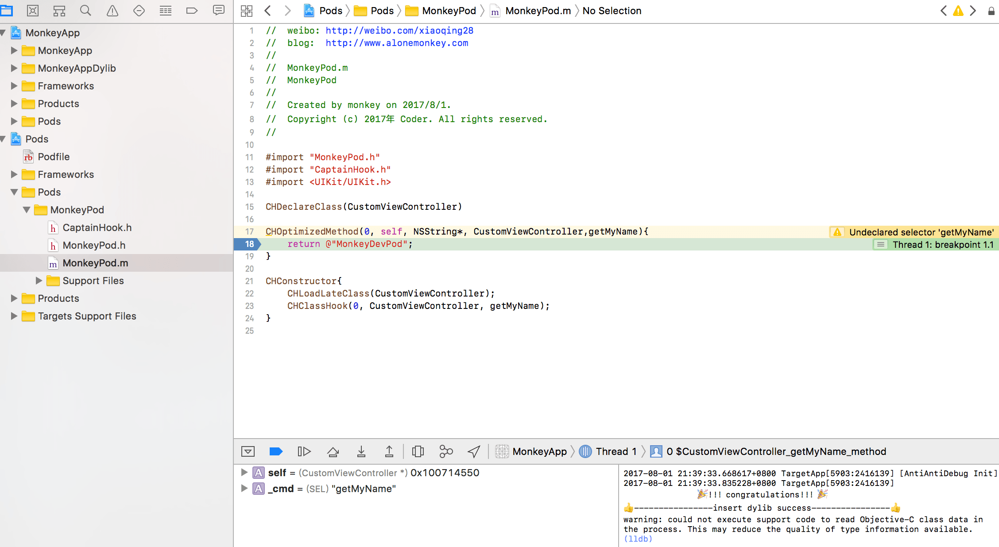
MonkeyApp and MonkeyPod use together
If I want to write pods while writing plugins, can I? The answer is of course! The perfect combination of MonkeyApp and MonkeyPod!
First create a new MonkeyApp project, then create a new MonkeyPod project, and then drag the MonkeyPod project to the MonkeyApp project, as shown in the following figure:
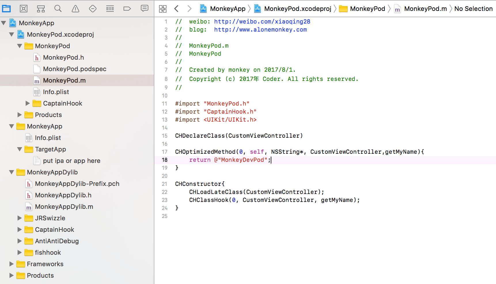
Then find MonkeyApp’s Target to increase the dependency and add MonkeyPod to Embed Librarys:
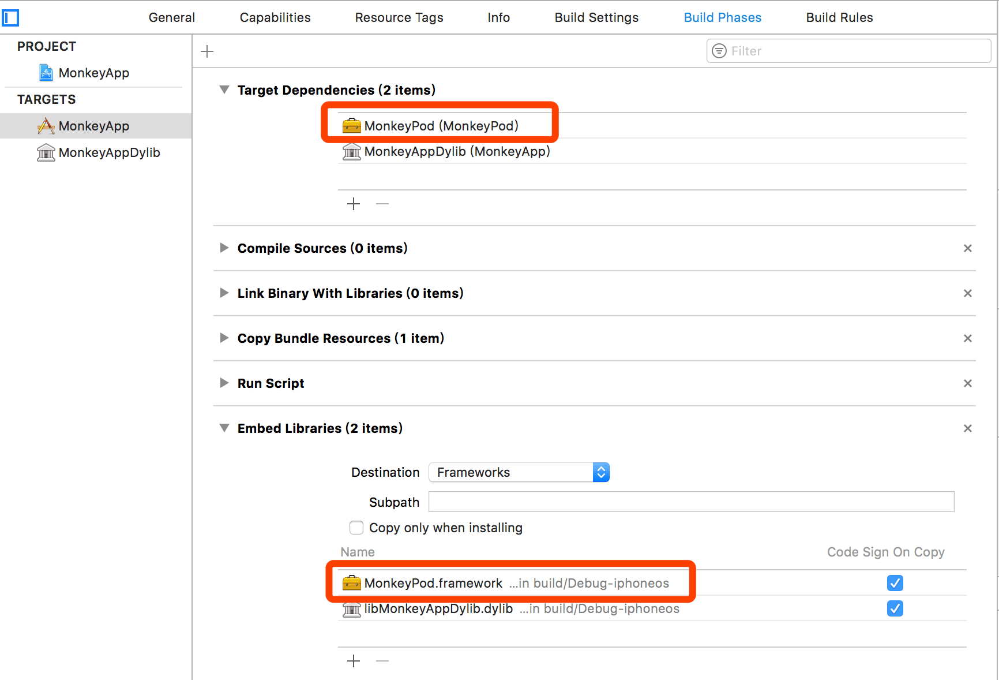
Finally link MonkeyPod in MonkeyApp’s dynamic library:
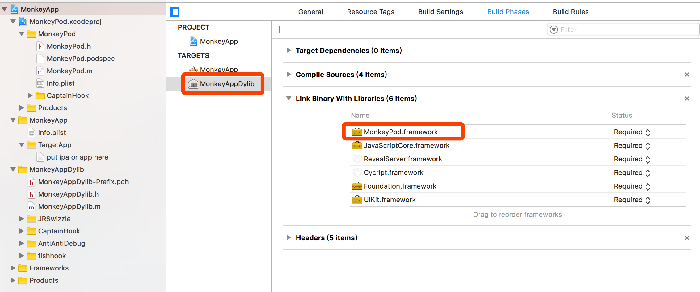
Run to write MonkeyPod to MonkeyApp while writing Pod to write plugin! ！ ! ！ !
Welcome to submit your own non-jailbreak plugin to my private CocoaPods warehouse.
https:/github.comAloneMonkey/MonkeyDevSpecs
Mac application plug-in
MonkeyDev now supports writing plugins for Mac apps! ！ ! ！ !
- First of all, the new project selects the MonkeyAppMac at the bottom of the MacOS module:
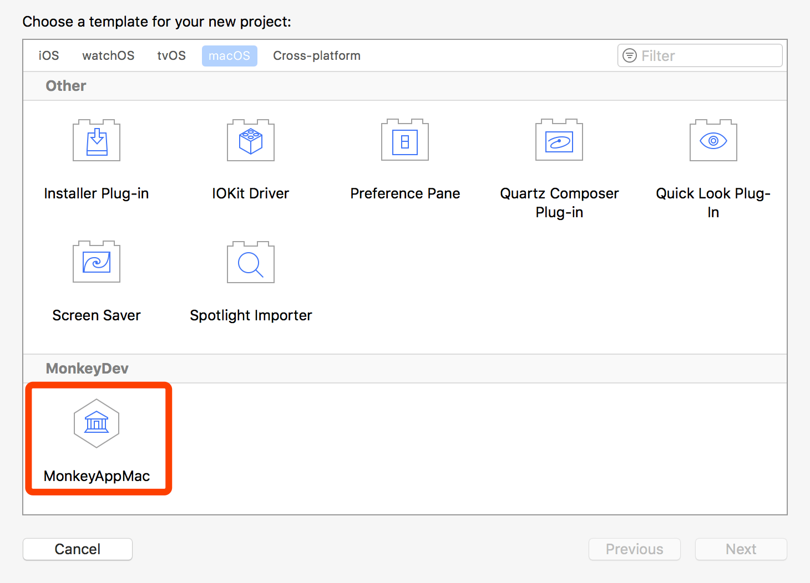
- Drag the target file you want to inject into the TargetApp folder:
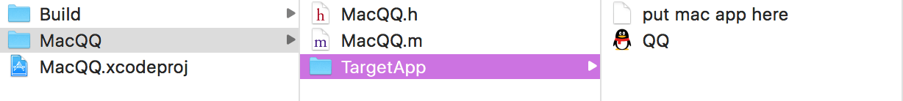
- Command + B runs the target file, will be automatically injected dylib, the default implementation of the QQ anti-revocation function:
@class MQAIOChatViewController; @class QQMessageRevokeEngine; static void (*origin_MQAIOChatViewController_revokeMessages)(MQAIOChatViewController*,SEL,id); static void new_MQAIOChatViewController_revokeMessages(MQAIOChatViewController* self,SEL _cmd,id arrays){ } static void (*origin_QQMessageRevokeEngine_handleRecallNotify_isOnline)(QQMessageRevokeEngine*,SEL,void*,BOOL); static void new_QQMessageRevokeEngine_handleRecallNotify_isOnline(QQMessageRevokeEngine* self,SEL _cmd,void* notify,BOOL isOnline){ } static void __attribute__((constructor)) initialize(void) { MSHookMessageEx(objc_getClass("MQAIOChatViewController"), @selector(revokeMessages:), (IMP)&new_MQAIOChatViewController_revokeMessages, (IMP*)&origin_MQAIOChatViewController_revokeMessages); MSHookMessageEx(objc_getClass("QQMessageRevokeEngine"), @selector(handleRecallNotify:isOnline:), (IMP)&new_QQMessageRevokeEngine_handleRecallNotify_isOnline, (IMP*)&origin_QQMessageRevokeEngine_handleRecallNotify_isOnline); }
- After the startup is complete, click "Debug -> Attach to Process" to select the QQ process that has just been run.
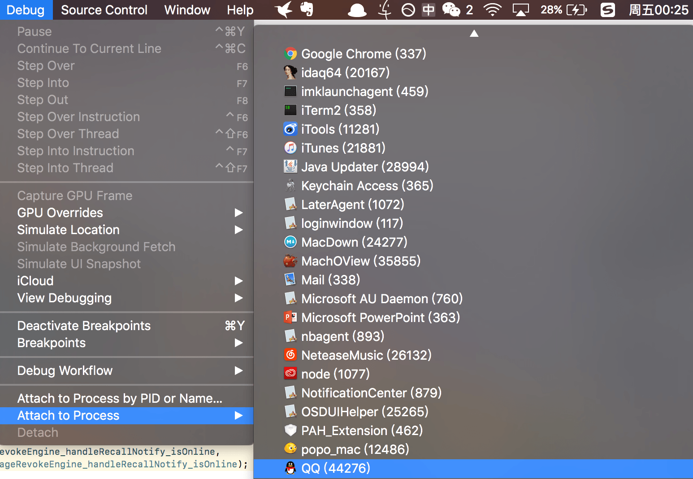
Then, in the new_QQMessageRevokeEngine_handleRecallNotify_isOnline method, a breakpoint, withdrawing a message, can be broken down to see the stack.
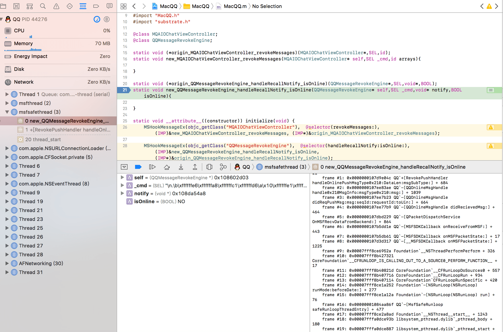
Note: This tool does not currently support applications that have antidebugging, such as [Baidu.net](https:/translate.googleusercontent.comtranslate_c?depth=1&hl=en&rurl=translate.google.com&sl=zhCN&sp=nmt4&tl=en&u=https:/github.comAloneMonkeyAntiAntiDebug&xid=17259,15700023,15700043,15700124,15700149,15700168,15700186,15700201&usg=ALkJrhhUmLGamd3rIZWyT0tg_VKguy8ZAg) . If you want to debug, you can use [AntiAntiDebug](https:translate.googleusercontent.comtranslatec?depth=1&hl=en&rurl=translate.google.com&sl=zh-CN&sp=nmt4&tl=en&u=https:/github.comAloneMonkey/AntiAntiDebug&xid=17259,15700023,15700043,15700124,15700149,15700168,15700186,15700201&usg=ALkJrhhUmLGamd3rIZWyT0tgVKguy8ZAg) script to start anti-debugging.
Author related article: An article goes into the reverse world of Mac
Jailbreak plugin Xcode debugging
Before the Tweak and CaptainHook project does not support Xcode direct debugging, only through the print log to see the effect, the following can be directly through the MonkeyApp to facilitate debugging a lot, but each debugging must re-install the application is actually very troublesome, here A method to debug Tweak and CaptainHook projects directly using Xcode.
Since Xcode uses the default /Developer/usr/bin/debugserver debugging, the application being debugged must be resigned and installed. You can use MonkeyApp to resign and install it.
The specific process is as follows:
- Re-install the debugged application.
- Create a Tweak or CaptainHook project, write code, specify the bundle id, and set breakpoints.
- Click the Xcode menu bar -> Debug -> Attach to Process by PID or Name.
- Output process name or pid.
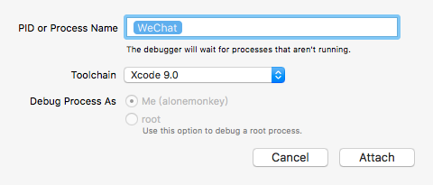
- Fill in the process name above to start debugging, and then open the application being debugged, it will automatically attach and break at the breakpoint location (if triggered).
- Then you can debug development, modify the code after the command + b installation, and then repeat step 3.
The effect chart is as follows:
Tweak Project Debug Tweak Project Debug
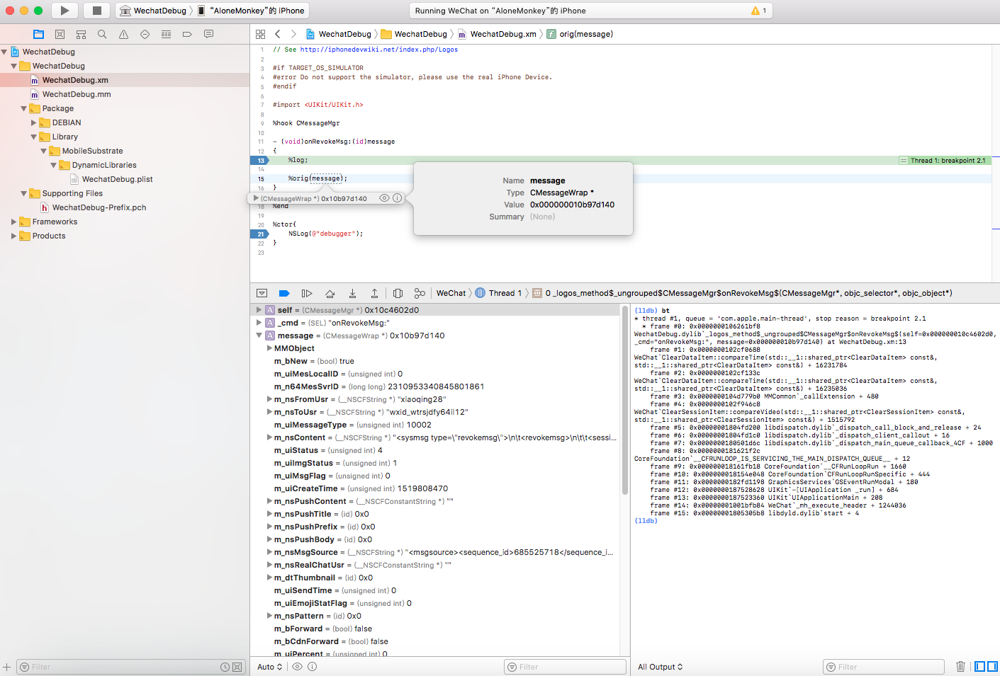
CaptainHoook Project Debug CaptainHoook Project Debug